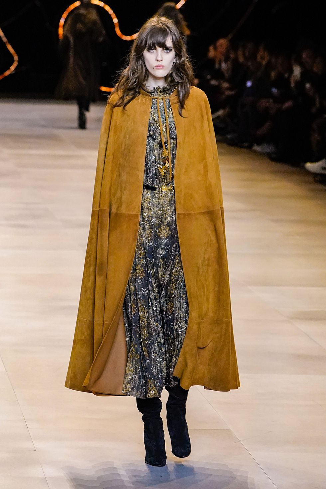
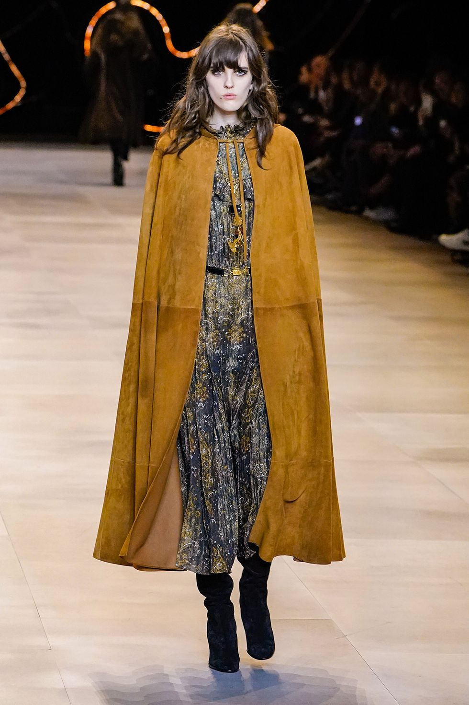

Hermes
Hermès's heirloom quality feels important to today's conscious consumerism conversation, and designer Nadège Vanhee-Cybulski seemed to agree via her straightforward show notes: "What is beautiful must be useful." Bourgeois basics are always on the menu at this label, but per Vanhee-Cybulski, even your finery is meant to serve a purpose. This season's leather coats, lined with shearling, of course, and luxe layering pieces were case in point, and carried on the house's heritage of making investment pieces so well crafted in their usefulness that you'll likely spend as much time studying their artful construction as you will wearing them. We assumed the brand's recent beauty launch was behind the bold color pops in the otherwise white and neutral palette, but it appeared that the equestrian lifestyle at the core of the label's DNA inspired the primary punctuations of color, as evidenced by the horse-jumping poles that set the show's scene. —Carrie Goldberg

Commes des Garcons
Rei Kawakubo always makes us dream, and this season's display from Comme des Garçons was no different. Part sculpture exhibition, part interpretive dance piece, part fashion show, the designer (yet again) defied gravity with her knack for obscure proportion. Models walked the runway to a different soundtrack per look, and each ensemble came complete with a headpiece or veiling so grand in scale it was hard not to consider that these could be Kawakubo's take on a bride's many facets, from angelic and virginal to experimental and eccentric. The designer tapped the brand's archive for inspiration, reinterpreting CDG tropes in new ways. Considering past seasons, fall 2020 also seemed to be a study of bubbles in all their forms, with bubble-pleated skirts and lumps on shirts, plus bubble-wand headpieces covered in veiling that looked like the soapy remains of those that just popped. —Carrie Goldberg
Altuzarra
Fall 2020 was Joseph Altuzarra's own Portrait of a Lady—a specific lady to be exact. Inspired by a box of old clothing that belonged to his grandmother, Altuzarra began with ladylike suiting, which was particularly feminine (and punny) with portrait necklines, then riffed on his grandmother's traditional Chinese cheongsams, using their silhouette, colors, and floral prints in varying modern ways. The suiting and knitwear stood out among even the more colorful pieces, as did the frothy feathered accessories, which Altuzarra's "ladies" held to their chests as though they were petite pets, rather than one of next season's must-have evening bags. —Carrie Goldberg
Balmain
It was all about extremes on the Balmain runway. Shapes were either voluminous and oversized or skintight and short (or a combination of the two). Never a label that overly lends itself to daytime dressing, fall felt especially made for after sunset. Sequins, powderpuff tulle, over-the-elbow gloves, and latex would all balk at the idea of heading out before 9 p.m., while billowing satin gowns looked to be inspired by Grecian goddesses of the warrior variety. The corporate power set wasn't left out, either, with separates that deserve to be put together for a bold daytime look. Oversized blazers, tall leather boots, and printed skirts would feel at home in a corner office, while a long camel cape practically screamed for CEO shoulders (it needs to be seen on the go, ideally entering a tall skyscraper, to really be appreciated). —Leah Melby Clinton
Celine
Oftentimes it feels as if a runway is either trying to get you to dream or shop, and Celine's fall collection leaned into the latter. Classic, pleasing pieces abounded and regarding it as a whole made it easy to do fashion equations in your head: These were the types of items you can invest in knowing you'll style them a dozen other ways (and wear for years). So, who will be first to shop come autumn? Those who count Marianne Faithfull and Mick Jagger as style icons are likely to be pulled in: Boho-rock was alive and well with poet blouses, floaty dresses, and shaggy coats all on display. Meanwhile, plaid and crisp-white collars and cuffs contrasted with the hippie feel; the lineup for evening did, too, with long, lean gowns that felt like the best of Studio 54. Taken together, it was the full range of the '70s in the best possible way—archival, not costume party. —Leah Melby Clinton
 
